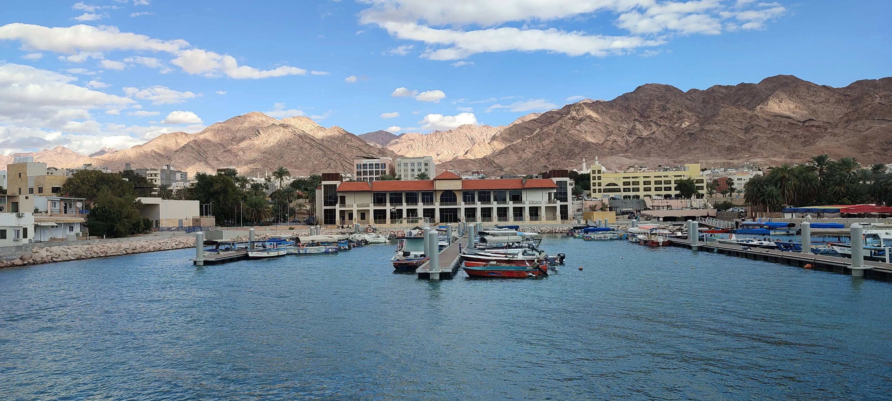
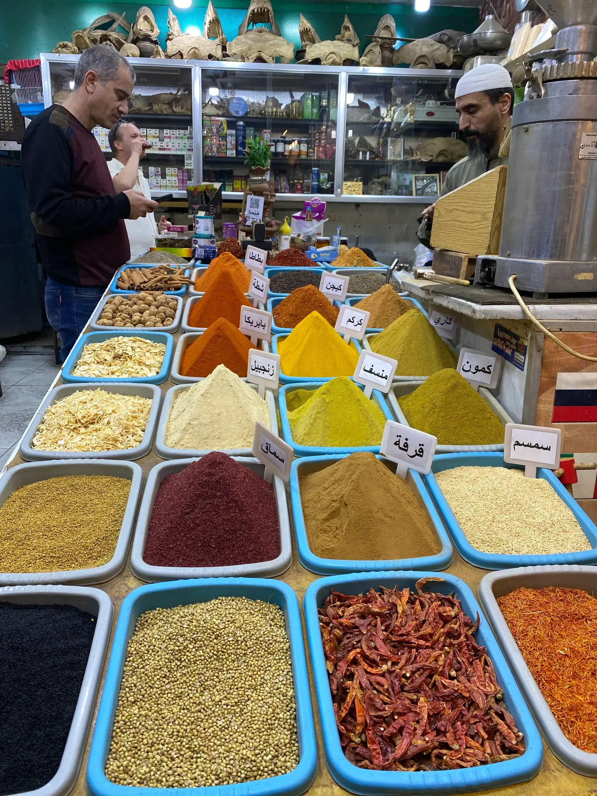

When the sun dips below the Red Sea, painting the sky in shades of orange and purple, Aqaba transforms. Unlike the bustling, sun-drenched days, the evenings in Jordan's only coastal city are a time for relaxation, family, and a uniquely Jordanian kind of social life. If you're looking for loud clubs and late-night bars, you've come to the wrong place. Aqaba's nightlife is about culture, community, and culinary delights.
The Evening Promenade: Life on the Corniche
The heart of Aqaba's evening activity is the Corniche (seafront promenade). As the heat fades, families, friends, and couples emerge to enjoy the cool sea breeze. This is the ultimate local experience—a slow, social walk known as the promenade.
You'll see children playing, vendors selling small toys and snacks, and groups gathering to talk. It's a safe, vibrant, and entirely authentic scene. Grab a cup of fresh juice or a bag of roasted nuts and simply join the flow. It's the perfect way to feel the pulse of the city and watch the lights of the port and the neighboring countries twinkle across the water.
 The magical Aqaba Corniche at night, where locals gather for their evening promenade.Late-Night Bites: The Essential Culinary Stops
Food is central to the Jordanian evening, and some of the best flavors only come out after dark.
The Sweet Secret: Kunafa
No evening is complete without Kunafa. This warm, syrupy cheese pastry is a national obsession. Look for the local shops with long lines—that's how you know it's fresh. The cheese is melted, the pastry is crispy, and the orange blossom syrup is poured on top right before your eyes. It's a must-try dessert that perfectly caps off any night.
The Savory Staple: Late-Night Shawarma
While you can find shawarma all day, there's something special about a late-night wrap. The meat has been slow-roasting all day, becoming incredibly tender and flavorful. Ask a local for their favorite spot—everyone has one—and enjoy a wrap packed with meat, pickles, and tahini, often served with a side of fresh mint tea.
The Coffee Culture: A Place to Connect
Jordanian coffee culture is less about a quick caffeine fix and more about sitting, talking, and connecting. The local cafes, or maqha, are the perfect place to unwind.
Traditional Qahwa
Order a small cup of traditional Arabic coffee (Qahwa), often flavored with cardamom. It's strong, served in tiny cups, and meant to be sipped slowly while you engage in conversation. The ritual of coffee drinking is as important as the coffee itself—it's a moment to pause, reflect, and connect with those around you.
Shisha (Hookah): The Social Experience
Many cafes offer shisha, which is a popular social activity in Aqaba. It's a relaxed way to spend an hour or two, often accompanied by a game of backgammon or cards. The sweet smoke, the gentle bubbling of the water pipe, and the company of friends or strangers-turned-friends create an atmosphere that is uniquely Middle Eastern and deeply welcoming.
 A moment of connection over traditional Arabic coffee and tea in a local café.
A moment of connection over traditional Arabic coffee and tea in a local café.
The Old Town Souk: A Different Kind of Shopping
The Old Town Souk, which can be overwhelming during the day, takes on a magical, quieter atmosphere at night. The spice shops are still open, their aromas mixing with the evening air. It's a great time to browse for souvenirs, spices, and local crafts without the midday rush. The shopkeepers are often more relaxed and happy to chat, offering a genuine glimpse into local life.
Walk through the narrow alleys, let your senses guide you, and don't be afraid to ask questions. The vendors love to share stories about their products—where the spices come from, how to use them, and the traditions behind them. It's an educational and sensory experience that captures the essence of Aqaba's heritage.
 The aromatic spice market in Aqaba's Old Town Souk, a sensory delight after dark.Stargazing: The Desert Sky Above
Due to its location on the coast and relatively clear desert skies, Aqaba offers incredible stargazing opportunities. Head just outside the city lights to a quiet beach spot or join a guided evening walk that includes a moment to look up at the stars. On clear nights, you can see the Milky Way stretching across the sky—a humbling reminder of the vastness of the universe and the smallness of our daily worries.
Experience Aqaba's Night with Suhaila-locals
The true beauty of Aqaba's nightlife is its simplicity and focus on human connection. It's not about spending money; it's about spending time. Our Walking Tour often extends into the early evening, allowing you to experience this transformation firsthand, and our Dining Experience is the perfect way to share a traditional, home-cooked meal as the city lights up.
Come, walk with us, and discover the gentle, welcoming charm of Aqaba after dark. Book your local evening experience today!